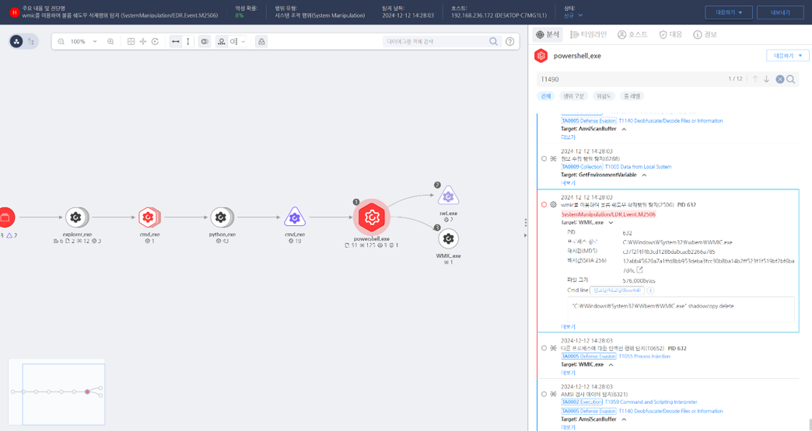

T1490.000.01 볼륨 새도우 카피 삭제
D3FEND
MITRE ATT&CK 액션을 기준으로 대응 방안을 작성
Detection
- process_name : wmic.exe AND
- Action : Process-Create AND
- cmdline : "shadowcopy delete"
Detection(EDR)

Response
- 이벤트 분석
- 섀도우 카피 삭제 시도 이전의 시스템 복구 포인트 상태를 비교하여 복구 가능성 평가.
- 삭제 명령과 관련된 특정 사용자 세션 및 활동 로그를 확인하여 공격 진행 과정 추적.
- 악성 명령어 실행의 트리거 이벤트(예: 새로운 소프트웨어 설치, 권한 상승 시도)를 식별.
- 격리 및 조사
- 섀도우 카피 삭제를 유발한 시스템 스케줄러 작업(Task Scheduler) 또는 서비스 실행 여부 확인.
- 삭제 도구의 행동 패턴 및 네트워크 연결을 조사하여 공격 경로를 추적.
- 정보 차단
- 실시간 파일 시스템 스냅샷 보호 솔루션을 배포해 공격자의 삭제 명령이 적용되지 않도록 설정.
- 섀도우 카피 삭제 시도와 연결된 명령 실행 타임라인을 분석하여 다른 공격 벡터 차단.
Mitigations
- 데이터 백업 보호
- 백업 시스템과 운영 환경을 분리(air-gap)하여 공격자의 접근을 원천적으로 차단.
- 로그 및 섀도우 카피 백업 암호화를 통해 공격자가 백업 데이터를 변조하거나 삭제하지 못하도록 설정.
- 명령어 기반 보호
- 주요 시스템에서 vssadmin, wmic 명령어 대신 API 기반 관리 도구로 섀도우 카피를 관리.
- 알려진 명령어 외에 유사 명령어(예: powershell.exe로 대체된 호출)를 허용하지 않도록 필터링.
- 공격 감지 강화
- 섀도우 카피 관련 파일 시스템 변경 활동을 실시간으로 탐지하기 위한 커널 모니터링 도구 배포.
- 섀도우 카피 삭제 시도 시 즉각 알림과 로그 저장을 별도 보안 위치에 자동 백업.
- 운영 정책 개선
- 복구 시점 삭제 시도를 사전에 탐지하기 위해 스냅샷 무결성 점검을 자동화.
- 복구 불가 상태를 방지하기 위한 복수 섀도우 카피 저장소 분산 배치 전략 구현.
Affected Techniques
Action 실행시 함꼐 영향을 받는 다른 Techniqes
| D3FEND |
| D3-PSA Process Spawn Analysis |
| D3-PLA Process Lineage Analysis |